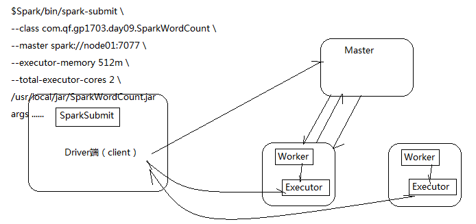
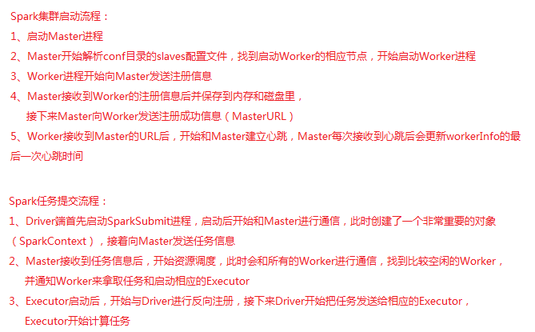
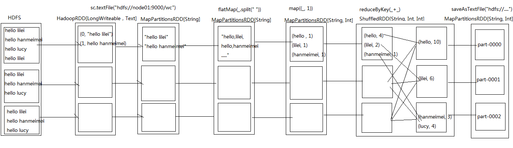
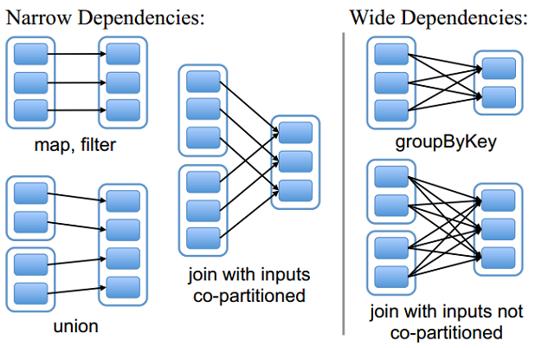
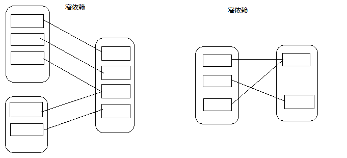
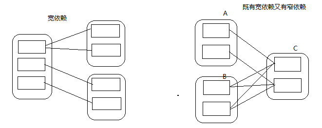
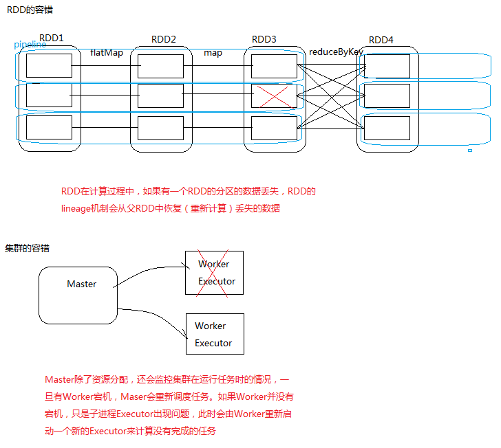
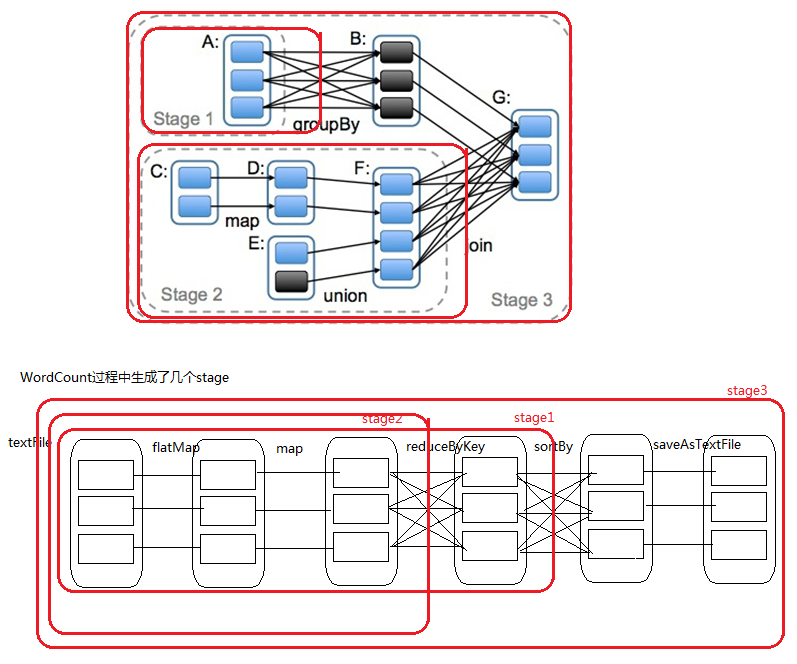
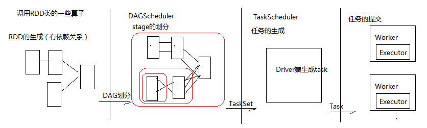

1、常用算子运用场景和源代码执行过程
1、用SparkCore实现案例需求 2、Spark集群启动和任务提交流程 3、WordCount过程中产生的RDD 4、RDD的依赖关系 5、Lineage 6、RDD的缓存 7、DAG的生成 8、任务生成和提交的四个阶段
1、加深理解算子运用技巧 2、理解Spark启动流程和任务提交流程 3、通过WordCount过程分析创建的RDD 4、RDD的依赖关系 5、RDD的Lineage 6、RDD的缓存及缓存级别 7、DAG的生成和Stage划分 8、任务生成和提交的四个重要阶段
统计所有用户对每个学科的各个模块的访问次数，再取Top3
版本一：
xxxxxxxxxxobject SubjectCount1 { def main(args: Array[String]): Unit = { val conf = new SparkConf().setAppName("SubjectCount1").setMaster("local") val sc = new SparkContext(conf) // 获取数据 val file = sc.textFile("subject/access.txt") // 切分 val tupled: RDD[(String, Int)] = file.map(line => { val fields = line.split("\t") val url = fields(1) (url, 1) }) // 相同的url进行聚合，这样就可以得到每个学科中各个模块的访问次数 val reducedUrl: RDD[(String, Int)] = tupled.reduceByKey(_+_) // 获取学科信息 val subjectAndUrlAndSumed: RDD[(String, String, Int)] = reducedUrl.map(x => { val url = x._1 val sumed = x._2 val subject = new URL(url).getHost (subject, url, sumed) }) // 以学科信息分组， 然后排序并整合数据得到结果 val res: RDD[(String, List[(String, String, Int)])] = subjectAndUrlAndSumed.groupBy(_._1).mapValues(_.toList.sortBy(_._3).reverse.take(3)) println(res.collect.toBuffer) sc.stop() }}版本二：cache（缓存）
xxxxxxxxxxobject SubjectCount2 { def main(args: Array[String]): Unit = { val conf = new SparkConf().setAppName("SubjectCount1").setMaster("local") val sc = new SparkContext(conf) // 获取数据 val file = sc.textFile("subject/access.txt") // 模拟从数据库获取的学科信息 val subjects = Array("http://java.learn.com", "http://ui.learn.com", "http://bigdata.learn.com", "http://android.learn.com", "http://h5.learn.com") // 切分 val tupled: RDD[(String, Int)] = file.map(line => { val fields = line.split("\t") val url = fields(1) (url, 1) }) // 相同的url进行聚合，这样就可以得到每个学科中各个模块的访问次数 val reducedUrl: RDD[(String, Int)] = tupled.reduceByKey(_+_) // 通常会将shuffle后的比较重要的数据先做一下缓存： // 1、便于以后快速的访问 // 2、提高数据的安全性 val cached: RDD[(String, Int)] = reducedUrl.cache()// val cached: RDD[(String, Int)] = reducedUrl.persist() for (subject <- subjects){ val filteredSubject: RDD[(String, Int)] = cached.filter(_._1.startsWith(subject)) val res: Array[(String, Int)] = filteredSubject.sortBy(_._2, false).take(3) println(res.toBuffer) } sc.stop() }}版本三：自定义分区
xxxxxxxxxx/** * 实现自定义分区器 * 按照每个学科的数据分别放到不同分区里 */object SubjectCount3 { def main(args: Array[String]): Unit = { val conf = new SparkConf().setAppName("SubjectCount1").setMaster("local") val sc = new SparkContext(conf) // 获取数据 val file = sc.textFile("subject/access.txt") // 切分 val tupled: RDD[(String, Int)] = file.map(line => { val fields = line.split("\t") val url = fields(1) (url, 1) }) // 相同的url进行聚合，这样就可以得到每个学科中各个模块的访问次数 val reducedUrl: RDD[(String, Int)] = tupled.reduceByKey(_+_) // 获取学科信息并把聚合后的所有数据缓存 val cachedUrl: RDD[(String, (String, Int))] = reducedUrl.map(x => { val url = x._1 val subject = new URL(url).getHost val sumed = x._2 (subject, (url, sumed)) }).cache() // 调用Spark默认的分区器来进行数据的分区,会发生哈希碰撞，导致出现数据倾斜，需要自定义分区器// val res: RDD[(String, (String, Int))] = cachedUrl.partitionBy(new HashPartitioner(3))// res.saveAsTextFile("c://out20180301-1") // 获取所有的学科信息 val subjects: Array[String] = cachedUrl.keys.distinct().collect() // 调用自定义分区器来获取分区号 val partitioner = new SubjectPartitioner(subjects) // 开始分区 val partitioned: RDD[(String, (String, Int))] = cachedUrl.partitionBy(partitioner) // 排序取Top3 val res: RDD[(String, (String, Int))] = partitioned.mapPartitions(it => { it.toList.sortBy(_._2._2).reverse.take(3).iterator }) res.saveAsTextFile("c://out20180301-2") sc.stop() }}// 自定义分区器class SubjectPartitioner(subjects: Array[String]) extends Partitioner{ // 用来存储学科信息和分区号 private val subjectAndNum: mutable.HashMap[String, Int] = new mutable.HashMap[String, Int]() // 计数器，用来生成分区号 var i = 0 for (subject <- subjects){ subjectAndNum += (subject -> i) i += 1 } // 获取分区数 override def numPartitions = subjects.length // 获取分区号 override def getPartition(key: Any) = { subjectAndNum.getOrElse(key.toString, 0) }}


在WordCount的代码中可以调用toDebugString方法来查看整个过程产生的RDD
println(res.toDebugString)
RDD和它依赖的父RDD（s）的关系有两种不同的类型，即窄依赖（narrow dependency）和宽依赖（wide dependency）。

窄依赖指的是每一个父RDD的Partition最多被子RDD的一个Partition使用
总结：窄依赖我们形象的比喻为独生子女

宽依赖指的是多个子RDD的Partition会依赖同一个父RDD的Partition
总结：宽依赖我们形象的比喻为超生

RDD只支持粗粒度转换，即在大量记录上执行的单个操作。将创建RDD的一系列Lineage（即血统）记录下来，以便恢复丢失的分区。RDD的Lineage会记录RDD的元数据信息和转换行为，当该RDD的部分分区数据丢失时，它可以根据这些信息来重新运算和恢复丢失的数据分区。

Spark速度非常快的原因之一，就是在不同操作中可以在内存中持久化或缓存多个数据集。当持久化某个RDD后，每一个节点都将把计算的分片结果保存在内存中，并在对此RDD或衍生出的RDD进行的其他动作中重用。这使得后续的动作变得更加迅速。RDD相关的持久化和缓存，是Spark最重要的特征之一。可以说，缓存是Spark构建迭代式算法和快速交互式查询的关键。
RDD通过persist方法或cache方法可以将前面的计算结果缓存，但是并不是这两个方法被调用时立即缓存，而是触发后面的action时，该RDD将会被缓存在计算节点的内存中，并供后面重用。
xxxxxxxxxxval cachedRDD = rdd1.cache() xxxxxxxxxxval cachedRDD = rdd1.persist()通过查看源码发现cache最终也是调用了persist方法，默认的存储级别都是仅在内存存储一份，Spark的存储级别还有好多种，存储级别在object StorageLevel中定义的
xxxxxxxxxxval NONE = new StorageLevel(false, false, false, false)val DISK_ONLY = new StorageLevel(true, false, false, false)val DISK_ONLY_2 = new StorageLevel(true, false, false, false, 2)val MEMORY_ONLY = new StorageLevel(false, true, false, true)val MEMORY_ONLY_2 = new StorageLevel(false, true, false, true, 2)val MEMORY_ONLY_SER = new StorageLevel(false, true, false, false)val MEMORY_ONLY_SER_2 = new StorageLevel(false, true, false, false, 2)val MEMORY_AND_DISK = new StorageLevel(true, true, false, true)val MEMORY_AND_DISK_2 = new StorageLevel(true, true, false, true, 2)val MEMORY_AND_DISK_SER = new StorageLevel(true, true, false, false)val MEMORY_AND_DISK_SER_2 = new StorageLevel(true, true, false, false, 2)val OFF_HEAP = new StorageLevel(false, false, true, false)DAG(Directed Acyclic Graph)叫做有向无环图，原始的RDD通过一系列的转换就就形成了DAG，根据RDD之间的依赖关系的不同将DAG划分成不同的Stage，对于窄依赖，partition的转换处理在Stage中完成计算。对于宽依赖，由于有Shuffle的存在，只能在parent RDD处理完成后，才能开始接下来的计算，因此宽依赖是划分Stage的依据。

RDD的生成、stage切分、task的生成、任务提交

第九节 案例练习
通过点击流日志中用户IP来统计区域访问量
xxxxxxxxxxobject IPSearch { def main(args: Array[String]): Unit = { val conf = new SparkConf().setAppName("IPSearch").setMaster("local") val sc = new SparkContext(conf) // 获取IP分布基础数据 val ipInfo: RDD[String] = sc.textFile("IPSearch/ip.txt") // 切分 val splitedIPInfo: RDD[(String, String, String)] = ipInfo.map(line => { val fields = line.split("\\|") val startIP = fields(2) // 起始IP val endIP = fields(3) // 结束IP val provice = fields(6) // IP对应的省份 (startIP, endIP, provice) }) // 在广播变量之前，需要调用action算子把数据提取到 val arrIPInfo: Array[(String, String, String)] = splitedIPInfo.collect() // 广播变量：对于经常用到的变量的值，为了避免在调用时产生大量网络IO，最好把该变量广播到每个相应的Executor val broadcastIPInfo: Broadcast[Array[(String, String, String)]] = sc.broadcast(arrIPInfo) // 获取用户的点击流日志，找到该用户属于哪个省并返回 val proviceAndOne: RDD[(String, Int)] = sc.textFile("IPSearch/http.log").map(line => { val fields = line.split("\\|") val ip = fields(1) // 用户的IP val ipToLong = ip2Long(ip) // 得到用户的Long类型的IP val arrIPInfo = broadcastIPInfo.value // IP基础数据 val index = binarySearch(arrIPInfo, ipToLong) // 根据索引找到对应的省 val provice = arrIPInfo(index)._3 (provice, 1) }) // 聚合访问量 val res: RDD[(String, Int)] = proviceAndOne.reduceByKey(_+_) res.foreachPartition(data2MySql)// println(res.collect.toBuffer) sc.stop() } // 转换ip为Long类型 def ip2Long(ip: String): Long = { val fragments: Array[String] = ip.split("[.]") var ipNum = 0L for (i <- 0 until fragments.length) { ipNum = fragments(i).toLong | ipNum << 8L } ipNum } // 二分法检索 def binarySearch(arr: Array[(String, String, String)], ip: Long): Int = { var low = 0 var high = arr.length while(low <= high){ val middle = (low + high) / 2 if ((ip >= arr(middle)._1.toLong) && (ip <= arr(middle)._2.toLong)){ return middle } if (ip < arr(middle)._1.toLong){ high = middle - 1 }else{ low = middle + 1 } } -1 } // 存储结果数据到MySql的函数 val data2MySql = (it: Iterator[(String, Int)]) => { var conn: Connection = null var ps: PreparedStatement = null val sql = "insert into location_info(location, counts, access_date) values(?,?,?)" try { conn = DriverManager.getConnection("jdbc:mysql://192.168.88.83:3306/bigdata?useUnicode=true&characterEncoding=utf8", "root", "root") it.foreach(line => { ps = conn.prepareStatement(sql) ps.setString(1, line._1) ps.setInt(2, line._2) ps.setDate(3, new Date(System.currentTimeMillis())) ps.executeUpdate() }) } catch { case e: Exception => println(e.printStackTrace()) } finally { if (ps!=null) ps.close() if (conn!=null) conn.close() } }}1、Spark集群启动和任务提交流程 2、Stage划分依据及DAG生成过程 3、RDD缓存和存储级别
1、自己实现案例需求 2、Spark启动流程和任务提交流程 3、DAG的生成
1、Spark集群启动流程 2、Spark任务时怎么提交的 3、DAG生成过程